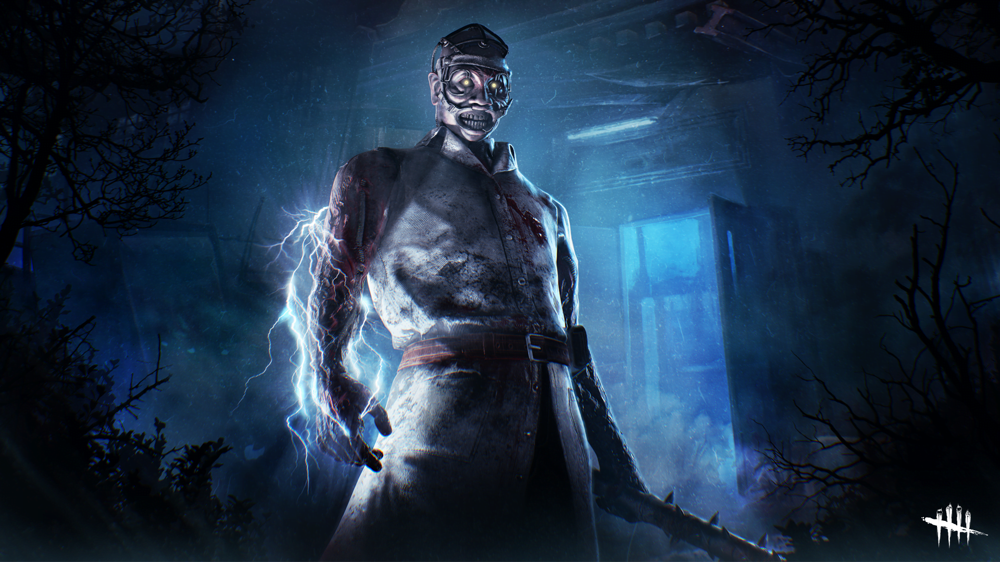
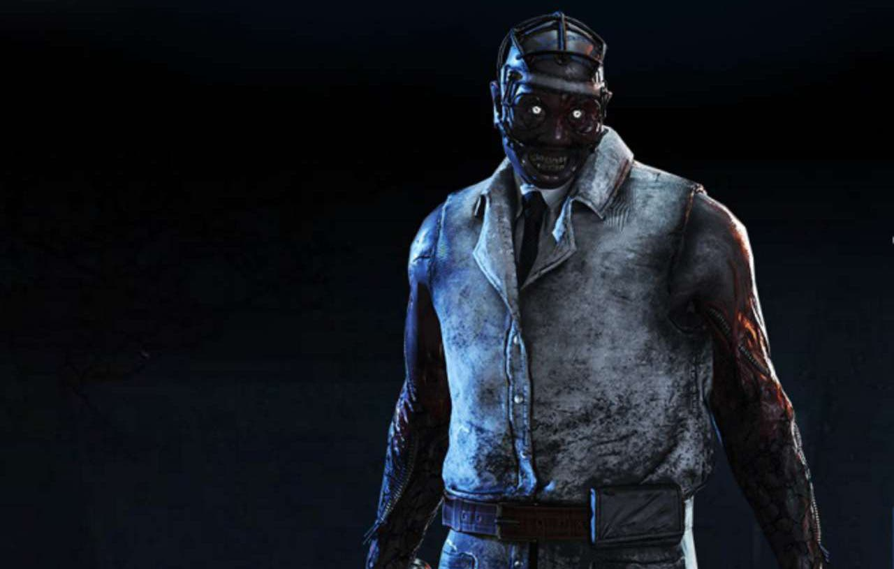

SPARK OF MADNESS
Spark of Madness es un capítulo de Dead by Daylight. Contiene la forma de tratamiento más oscura y experimental, donde la salud no es el objetivo, solo la locura. El Doctor lo verá ahora, lo quiera o no. El único atisbo de esperanza es una niña, una que nunca se rinde y siempre encuentra un camino. El capítulo Spark of Madness incluye un nuevo asesino, un sobreviviente y un mapa.
El Doctor
Herman Carter tenía buenas intenciones al principio. Se propuso comprender la psique humana. Pero las guerras y el secreto interrumpieron sus buenas intenciones, y en su lugar, Carter comenzó a experimentar con más y más sujetos de prueba reacios que ingresaron y le fueron traídos. En lugar de comprender, buscó medios para controlar. Por cualquier medio necesario. A veces, las palabras y los textos son tan útiles como las sierras de huesos y la electricidad. El ente le entregó la Chispa de Carter. ¿Era un regalo o una maldición? La Entidad habia encendido una chispa corrupta e inagotable en el corazón del Doctor que le permitía generar energía electroconvulsiva a voluntad. Su trato cruel corrompe las mentes de aquellos a quienes toca. Las víctimas conmocionadas por la chispa comienzan a perder el control de la realidad y, con la exposición repetida, sucumben inevitablemente a la locura.
Feng Min
Feng encontró la luz en los juegos de computadora desde el principio. Y ella no lo dejaría ir. Se convirtió en su vida. Y una meta para que ella lo alcance. Comenzó con concursos de bajo nivel celebrados en cibercafés. Esforzandose por ir ascendiendo. Lo único que se interpuso en su camino fue su actitud de lobo solitario. Una vida solitaria frente a una pantalla le sentaba perfectamente. Pero en equipos ... era algo completamente diferente. Pero lo que resultó ser un inconveniente en el mundo de los vivos, podría salvarle la vida en otro.